Posledný zápasU11 · III. liga prípraviek U11, 5. turnaj
Výsledok 1:1
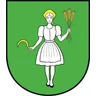
FK Janíkovce (hostia)· ŠK Dolné Krškany · remíza
Návrh webu · nie je to oficiálna stránka klubu
III. liga prípraviek U11 · 29. miesto zo 42 · vedúci Richard Katrenčiak
Posledný zápasU11 · III. liga prípraviek U11, 5. turnaj
Výsledok 1:1

FK Janíkovce (hostia)· ŠK Dolné Krškany · remíza
5–2–13výhry, remízy, prehry · skóre 38:69
Ďalšie zápasy zatiaľ nie sú vyžrebované.
III. liga prípraviek U11
| # | Tím | Z | V | R | P | Skóre | B |
|---|---|---|---|---|---|---|---|
| 1 | TJ Nové Sady | 20 | 20 | 0 | 0 | 136:7 | 60 |
| 2 | 20 | 19 | 1 | 0 | 118:9 | 58 | |
| 3 | 19 | 17 | 1 | 1 | 112:9 | 52 | |
| 4 | 16 | 15 | 1 | 0 | 136:10 | 46 | |
| 5 | FK Janíkovce | 20 | 14 | 4 | 2 | 83:17 | 46 |
| 6 | 16 | 15 | 0 | 1 | 101:8 | 45 | |
| 7 | 20 | 14 | 3 | 3 | 59:21 | 45 | |
| 8 | 15 | 14 | 0 | 1 | 57:14 | 42 | |
| 9 | FK Močenok | 15 | 12 | 2 | 1 | 67:19 | 38 |
| 10 | 16 | 11 | 1 | 4 | 57:39 | 34 | |
| 11 | 16 | 10 | 1 | 5 | 53:22 | 31 | |
| 12 | 19 | 10 | 1 | 8 | 52:53 | 31 | |
| 13 | ŠK Junior Ivanka pri Nitre | 16 | 10 | 0 | 6 | 54:26 | 30 |
| 14 | OFK Čakajovce | 12 | 9 | 2 | 1 | 51:10 | 29 |
| 15 | 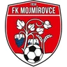 FK Mojmírovce | 16 | 9 | 2 | 5 | 57:50 | 29 |
| 16 | 19 | 9 | 2 | 8 | 45:32 | 29 | |
| 17 | 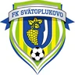 FK Svätoplukovo | 16 | 9 | 2 | 5 | 58:43 | 29 |
| 18 | 16 | 8 | 2 | 6 | 47:39 | 26 | |
| 19 | 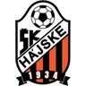 ŠK Hájske | 16 | 7 | 4 | 5 | 35:28 | 25 |
| 20 | FK Veľký Cetín | 16 | 8 | 1 | 7 | 39:40 | 25 |
| 21 | 15 | 8 | 0 | 7 | 62:30 | 24 | |
| 22 | 15 | 8 | 0 | 7 | 42:49 | 24 | |
| 23 | 15 | 7 | 0 | 8 | 30:59 | 21 | |
| 24 | 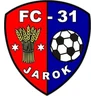 Futbalový klub FC 31 Jarok | 18 | 6 | 2 | 10 | 27:68 | 20 |
| 25 | 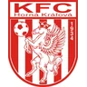 Futbalový klub KFC HORNÁ KRÁĽOVÁ | 16 | 6 | 1 | 9 | 45:57 | 19 |
| 26 | 16 | 6 | 0 | 10 | 39:63 | 18 | |
| 27 | 20 | 5 | 2 | 13 | 34:67 | 17 | |
| 28 | 16 | 5 | 2 | 9 | 27:47 | 17 | |
| 29 | 20 | 5 | 2 | 13 | 38:69 | 17 | |
| 30 | 15 | 4 | 3 | 8 | 24:33 | 15 | |
| 31 | OŠK Beladice | 19 | 4 | 0 | 15 | 37:92 | 12 |
| 32 | 12 | 3 | 0 | 9 | 14:38 | 9 | |
| 33 | 18 | 3 | 0 | 15 | 25:85 | 9 | |
| 34 | 16 | 3 | 0 | 13 | 28:92 | 9 | |
| 35 | 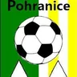 MFK Pohranice | 19 | 2 | 0 | 17 | 25:86 | 6 |
| 36 | 16 | 2 | 0 | 14 | 13:80 | 6 | |
| 37 | 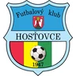 OFK Hosťovce | 16 | 1 | 2 | 13 | 15:88 | 5 |
| 38 | 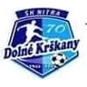 ŠK Nitra-Dolné Krškany | 20 | 1 | 1 | 18 | 19:105 | 4 |
| 39 | 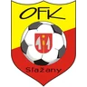 OFK Sľažany | 20 | 1 | 1 | 18 | 11:103 | 4 |
| 40 | 16 | 1 | 0 | 15 | 9:75 | 3 | |
| 41 | OFK Lužianky | 0 | 0 | 0 | 0 | 0:0 | 0 |
| 42 | 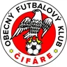 OFK Čifáre | 11 | 0 | 0 | 11 | 7:106 | 0 |
Hráči, ktorí v roku 2026 nastúpili alebo boli v nominácii (Sportnet). Pri mládeži len mená.